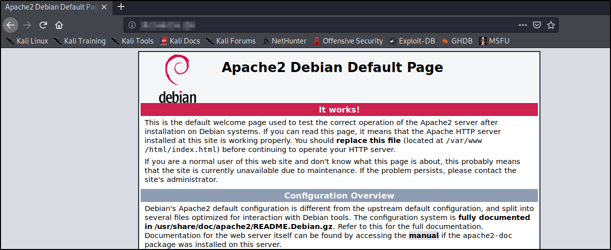

So in kali ther are a couple of different ways that we can start and stop services and by service, I mean a web server or SSH ormaybe a SQL database.
The first service we'll lok at is Apache2 - which is a web server. To get this started, run the command service apache2 start in your terminal and type in your IP address in your web browser search bar.
The below is what you should get:

To stop the apache2 service, service apache2 stop
An easy way to spin up a web server would be to use the command python -m SimpleHTTPServer 80. Usin python to create a web server is a great feature. Go look up how to spin up a FTP server using python.
To have your service up permanently, 'cause when you reboot your machine the service stops, service start only hols during that session. Use systemctl enable to permanently have a service running, and systemctl disable to stop a running service. Example: systemctl enable postgresql.
You should definatly run the above command in your terminal. It is important because, it's going to allow us to run Metasploit an have the postresql database running whenever we boot our machine.